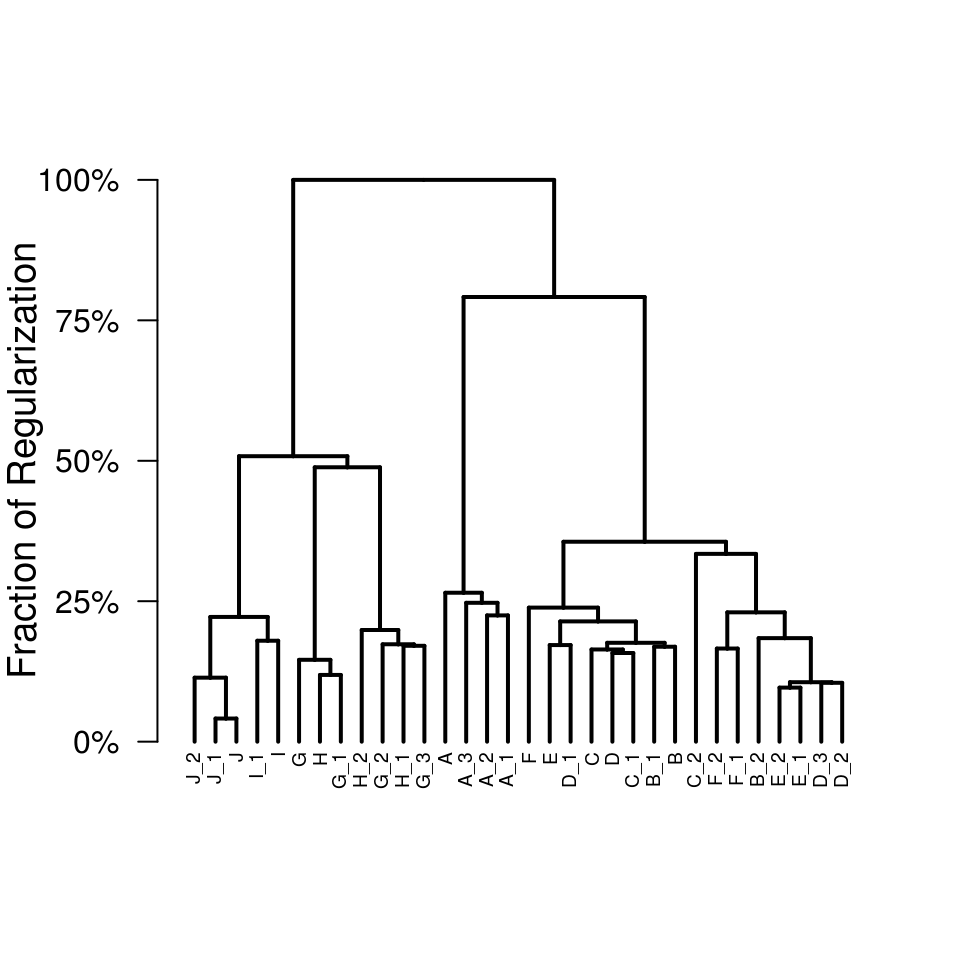
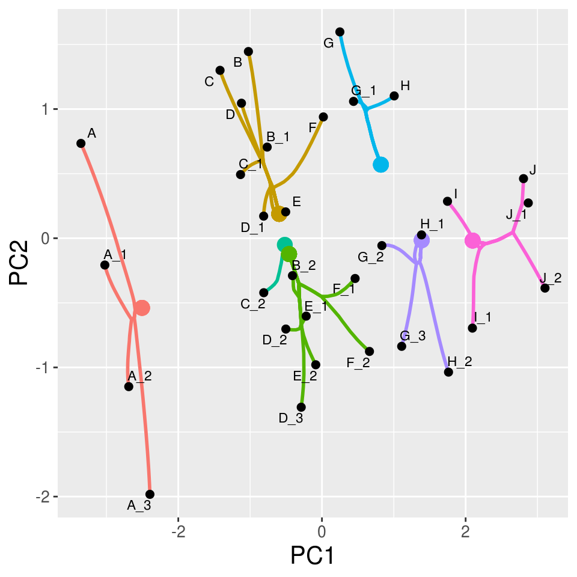
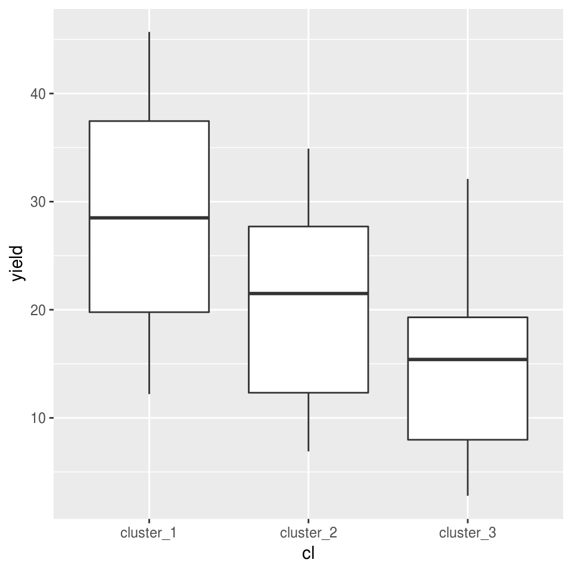
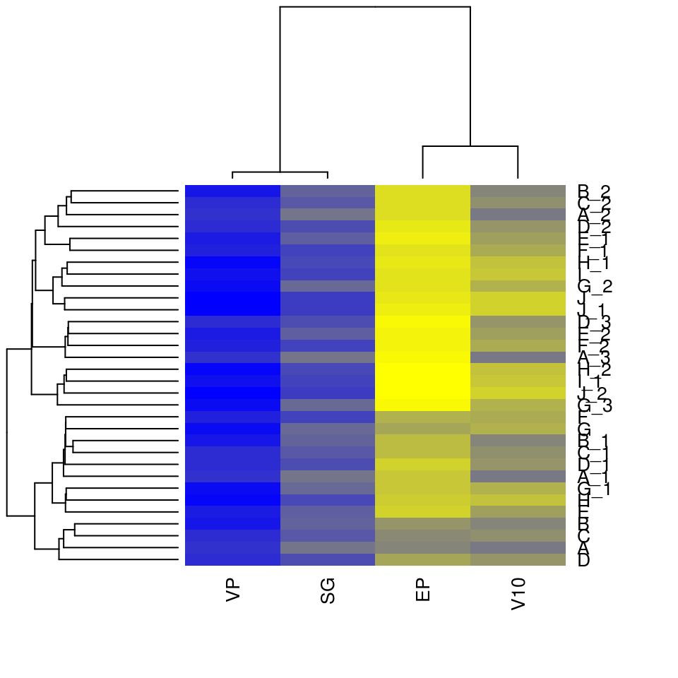
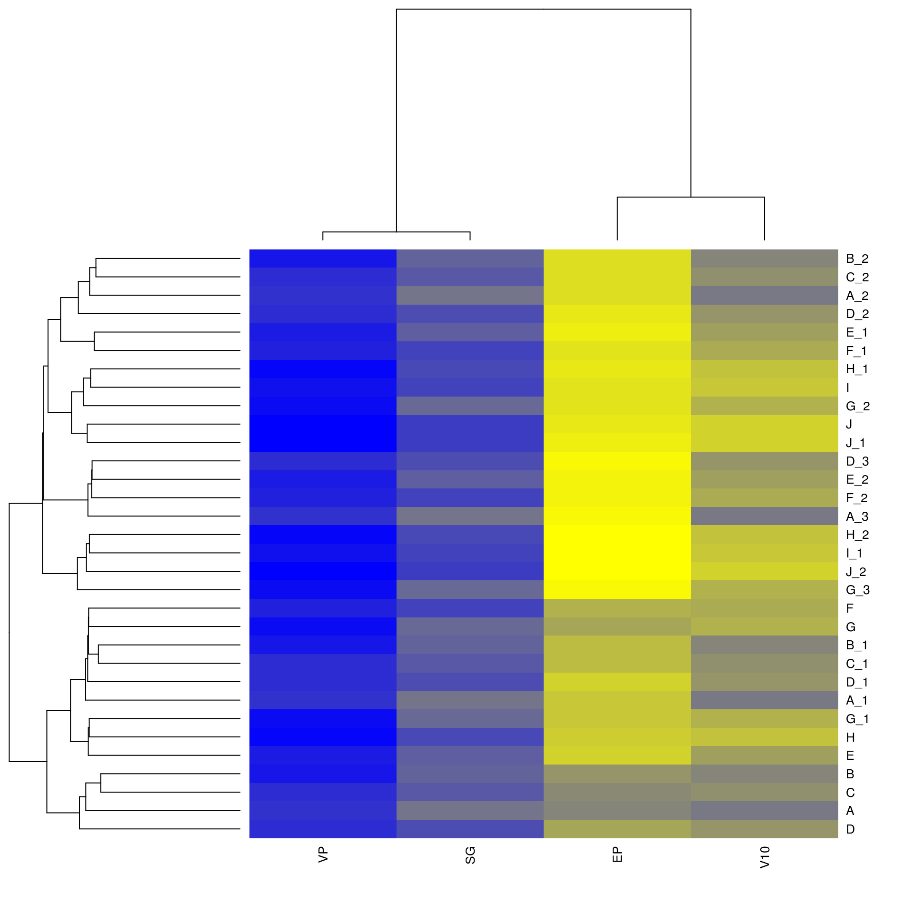

This vignette provides a quick usage guide to the clustRviz package, including fitting and visualization. In the sections below we work through a simple example dataset, illustrating both clustering and biclustering in clustRviz. While many details and customizations are discussed in the clustRviz Details Vignette, for now we show how to quickly fit, visualize, and save in clustRviz.
clustRviz may be used for clustering together observations based on similarities among their features. clustRviz accomplishes this by solving the Convex Clustering problem quickly using the technique of Algorithmic Regularization. The resulting algorithm, Convex Clustering via Algorithmic Regularization Paths (or CARP) provides a continuous path of clustering solutions which may be visualized and interactively explored.
For our first example we use the petrol data set from the MASS package.
# optionally install MASS package
# install.package('MASS')
data('petrol',package='MASS')
head(petrol)
#> No SG VP V10 EP Y
#> 1 A 50.8 8.6 190 205 12.2
#> 2 A 50.8 8.6 190 275 22.3
#> 3 A 50.8 8.6 190 345 34.7
#> 4 A 50.8 8.6 190 407 45.7
#> 5 B 40.8 3.5 210 218 8.0
#> 6 B 40.8 3.5 210 273 13.1The dataset contains the yield (Y) of a petroleum refining process and with measurements for specific gravity (SG), vapour pressure (VP), crude volatility (V10), desired gasoline volatility (EP), as well as sample identification labels (No); see ?petrolfor details.
Before clustering our data, we extract the columns of interest (here SG, VP, V10, and EP), and create the input matrix:
# create numeric input matrix
Xdat <- as.matrix(petrol[,c('SG','VP','V10','EP')])
head(Xdat)
#> SG VP V10 EP
#> 1 50.8 8.6 190 205
#> 2 50.8 8.6 190 275
#> 3 50.8 8.6 190 345
#> 4 50.8 8.6 190 407
#> 5 40.8 3.5 210 218
#> 6 40.8 3.5 210 273Clustering is done via a simple call to the CARP function below.
Here we specify the sample number (No) as the labels for our observations. This is done by providing the labels. If no labels were provided, CARP would attempt to use the rownames of the data matrix, and if no rownames were found, would automatically generate names. Additionally, since our variables are measured on different scales, we set the X.scale option to TRUE as well; see ?carp for additional fitting options as well as examples in the clustRviz Details Vignette
Once fitted, a brief description of the fit and parameter choices may be shown:
carp.fit
#> CARP Fit Summary
#> ====================
#>
#> Algorithm: CARP (t = 1.05)
#> Fit Time: 0.007 secs
#> Total Time: 0.218 secs
#>
#> Number of Observations: 32
#> Number of Variables: 4
#>
#> Pre-processing options:
#> - Columnwise centering: TRUE
#> - Columnwise scaling: TRUE
#>
#> Weights:
#> - Source: Radial Basis Function Kernel Weights
#> - Distance Metric: Euclidean
#> - Scale parameter (phi): 0.1 [Data-Driven]
#> - Sparsified: 3 Nearest Neighbors [Data-Driven]Visualizing the solution path is readily done via the plot function. A traditional dendrogram is displayed by default:

A more detailed visualization of the solution path can be obtained by plotting the principal components of the cluster means:

The plot above displays the first two principal components of the data, with black points representing the original data, and red curves illustrating movement along the solution path. As curves join together, observations are fused, and clusters formed. The percent argument tells plot to display a snapshot of the clustering solution path at \(10\%\) of total regularization.
Both the dendrogram and the clustering solution path may be viewed together interactively via the use of shiny applications:
These interactive visualizations allow one to view the cluster solution path and dendrogram as the Algorithmic Regularization iterates vary.
In addition to visualizations, cluster solutions may be obtained via the get_cluster_labels and get_cluster_centroids functions:
# Analyze the 3 cluster solution
get_cluster_labels(carp.fit, k = 3)
#> A A_1 A_2 A_3 B B_1 B_2
#> cluster_1 cluster_1 cluster_1 cluster_1 cluster_2 cluster_2 cluster_2
#> C C_1 C_2 D D_1 D_2 D_3
#> cluster_2 cluster_2 cluster_2 cluster_2 cluster_2 cluster_2 cluster_2
#> E E_1 E_2 F F_1 F_2 G
#> cluster_2 cluster_2 cluster_2 cluster_2 cluster_2 cluster_2 cluster_3
#> G_1 G_2 G_3 H H_1 H_2 I
#> cluster_3 cluster_3 cluster_3 cluster_3 cluster_3 cluster_3 cluster_3
#> I_1 J J_1 J_2
#> cluster_3 cluster_3 cluster_3 cluster_3
#> Levels: cluster_1 cluster_2 cluster_3
get_cluster_centroids(carp.fit, k = 3)
#> SG VP V10 EP
#> [1,] 50.80000 8.60 190.0000 308.0000
#> [2,] 38.34375 5.20 222.6250 316.8750
#> [3,] 36.60833 1.35 283.8333 360.4167In the code above, we specify the number of clusters and clustering returns the both the cluster assignment as well as the cluster means for the \(k=3\) solution along the path. As an example, we display the yield (Y) distribution for each of the clusters:
library(ggplot2)
ggplot(
aes(x=cl,y=yield),
data=data.frame(
yield = petrol$Y,
cl=get_cluster_labels(carp.fit, k = 3)
)
) + geom_boxplot()
After exploring visualizations and cluster solutions interactively, the visualization results can easily be exported via the saveviz function. For example, saving the cluster solution path plotted above may be done as follows:
saveviz(
x=carp.fit,
file.name="ClusterPathStatic.png",
plot.type='path',
image.type = 'static',
percent=.10)The above saves a static snapshot of the cluster solution path at \(10\%\) regularization; the number of clusters k may also be specified instead of percent. Interactive visualization may be saved as .gif files by specifiying image.type='dynamic'; see ?saveviz.CARP for details.
Clustering may also be done simultaneously on both observations and variables. clustRviz obtains such biclustering solutions by approximating the Convex Biclustering solution path, again via Algorithmic Regularization. The CBASS function is used to obtain biclustering solutions, and its usage is similar to CARP.
We fit the biclustering solution path as follows:
Once fitted, vizualizations are displayed again via the plot function. For CBASS fits, the default visualization is again the cluster dendrogram of the observations induced by the CBASS solution path.

Since both rows (observations) and columns (variables) are clustered simultaneously, a cluster dendrogram for the columns may also be plotted:
Additionally both dendrograms and the associated cluster heatmap can be viewed by passing the heatmap arguement.

As was the case of CARP, interactive visualizations may also be displayed:
CBASS’s interactive visualizations allows one to view dynamic changes in the cluster heatmap and dendrogram solutions along the path.
As was the case with CARP, clustering solutions are obtained via the get_cluster_labels function. The desired clustering solution is specified by:
k.row);k.col); orpercent).In the example below we obtain the biclustering solution which obtains \(3\) row clusters:
# How are the rows (observations) clustered at the 3 row cluster solution?
table(get_cluster_labels(cbass.fit, k.row = 3))
#>
#> cluster_1 cluster_2 cluster_3
#> 13 15 4
# How are the columns (features) clustered at the 3 row cluster solution?
table(get_cluster_labels(cbass.fit, k.row = 3, type = "col"))
#>
#> cluster_1
#> 4We can also investigate the bi-clustered data matrix (with the raw data replaced by estimated centroids) with the get_clustered_data function:
get_clustered_data(cbass.fit, k.row = 3)
#> SG VP V10 EP
#> A 132.7808 132.7808 132.7808 132.7808
#> A_1 132.7808 132.7808 132.7808 132.7808
#> A_2 163.9700 163.9700 163.9700 163.9700
#> A_3 163.9700 163.9700 163.9700 163.9700
#> B 132.7808 132.7808 132.7808 132.7808
#> B_1 132.7808 132.7808 132.7808 132.7808
#> B_2 163.9700 163.9700 163.9700 163.9700
#> C 132.7808 132.7808 132.7808 132.7808
#> C_1 132.7808 132.7808 132.7808 132.7808
#> C_2 163.9700 163.9700 163.9700 163.9700
#> D 132.7808 132.7808 132.7808 132.7808
#> D_1 132.7808 132.7808 132.7808 132.7808
#> D_2 163.9700 163.9700 163.9700 163.9700
#> D_3 163.9700 163.9700 163.9700 163.9700
#> E 132.7808 132.7808 132.7808 132.7808
#> E_1 163.9700 163.9700 163.9700 163.9700
#> E_2 163.9700 163.9700 163.9700 163.9700
#> F 132.7808 132.7808 132.7808 132.7808
#> F_1 163.9700 163.9700 163.9700 163.9700
#> F_2 163.9700 163.9700 163.9700 163.9700
#> G 132.7808 132.7808 132.7808 132.7808
#> G_1 132.7808 132.7808 132.7808 132.7808
#> G_2 163.9700 163.9700 163.9700 163.9700
#> G_3 187.6250 187.6250 187.6250 187.6250
#> H 132.7808 132.7808 132.7808 132.7808
#> H_1 163.9700 163.9700 163.9700 163.9700
#> H_2 187.6250 187.6250 187.6250 187.6250
#> I 163.9700 163.9700 163.9700 163.9700
#> I_1 187.6250 187.6250 187.6250 187.6250
#> J 163.9700 163.9700 163.9700 163.9700
#> J_1 163.9700 163.9700 163.9700 163.9700
#> J_2 187.6250 187.6250 187.6250 187.6250Finally we demonstrate how to save the visualizations produced by CBASS. Similar to CARP visualizations can be saved via the saveviz function which allows for saving static and dynamic visuals. For example, a .gif of the variable dendrogram as it varies throughout the path may be saved via:
saveviz(x=cbass.fit,
file.name = 'cbass_column_dendrogram_dynamic.gif',
plot.type = 'col.dendrogram',
image.type = 'dynamic'
)Similarly, a static snapshot of the bicluster heatmap at the moment along the path when \(4\) row clusters are formed may be saved also: